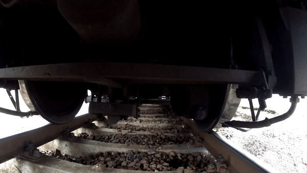

üëÅÔ∏è‚Äçüó®Ô∏è Overview
The wheel-rail attitude of high-speed rail reflects the complex dynamic interaction and restraint relationship between wheels and rails. Mastering the true contact attitude between them is an important foundation for ensuring the safe of high-speed railways. How to accurately obtain the wheel-track attitude of high-speed railways has always been a hot research field in domestic railway scientific research. However, it is imprecise and unreliable to obtain the wheel-rail contact attitude from 2D image. Extracting the feature points of the wheel-rail surface and reconstructing a 3D model can obtain the wheel-rail contact attitude more realistically and accurately.
Due to the fast running speed of high-speed trains, the wheel-rail surface is relatively smooth and there are no obvious feature points, which brings great challenges to the 3D reconstruction based on feature point extraction.

3D reconstruction technology is an important branch of computer vision technology and a popular research direction combining computer vision and computer image graphics. According to whether it is in contact with the measured object during measurement, it can be divided into contact measurement and non-contact measurement.

Although the contact measurement method has high measurement accuracy, the measurement efficiency is low, the speed is slow, and improper operation can easily damage the surface of the object to be measured, and because the probe has a certain surface area, it is difficult to measure objects with complex surfaces and does not have universality and versatility. Non-contact three-dimensional measurement methods can be divided into two categories: active measurement and passive measurement. The former is to project a designed pattern onto the surface of the target object. The pattern is distorted due to the height fluctuation of the object, and the target object is obtained by matching the distorted pattern. The latter is to illuminate the target object with ambient light and then detect the characteristic points of the target object to obtain its data. The non-contact measurement method has become the research trend of three-dimensional profile measurement due to its advantages of no damage, high measurement speed, and simplicity.
The coded structured light method used in the project uses a certain pattern of coded structured light patterns projected by the projector to encode the target object, uses the camera to obtain the object image, and uses the computer to decode the resulting image, using the image points in the camera and the projector The point correspondence in Calculates the space coordinates of the surface points of the object, obtains the three-dimensional information of the object, and restores the three-dimensional shape of the object. The structured light system is shown in the following figure.

The 3D reconstruction technology of coded structured light method is mainly composed of five key technologies: system calibration, structured light coding, image acquisition, structured light decoding and three-dimensional coordinate calculation.

- System Calibration: The system consists of a camera, a projector and a computer. The goal of calibration is to calculate the internal parameter matrix and the lens distortion coefficient of the camera and the projector and the external parameter matrix of the relative position between the two.
- Structured Light Coding: The "identity" of each point of the pattern can be identified through coding.
- Image Capture: The projector projects the coded structured light pattern on the surface of the target, and the pattern will be distorted with the modulation of the surface shape of the object. What is captured by the camera is the structured light image modulated by the object. The modulated image reflects the three-dimensional information of the surface shape of the object.
- Structured Light Decoding: Decode the captured structured light image, the decoding method depends on the encoding method. The purpose is to establish the correspondence between the feature points of the camera plane and the projection plane.
- 3D Coordinate Calculation: Using the corresponding relationship between the feature points and the calibration results, the 3D information of the feature points are obtained based on the principle of triangulation.
The coded structured light mainly include Time-multiplexing and Space Codification. Although Time-multiplexing has good reconstruction accuracy, it is not a good choice for moving objects because of the need to project multiple pictures on the surface of the object. Compared with Time-multiplexing, Space Codification has a lower reconstruction accuracy, but because only one picture is projected, it is often used for object reconstruction of dynamic objects.
In summary, given the difficulty in the project that the surface of the wheel and rail is smooth and the feature points are not easy to extract, the feature points on the surface of the object can be artificially increased by projecting the coding pattern on the surface of the object. The Space Codification only needs a single projection, which is suitable for the reconstruction of dynamic objects. Therefore, this project mainly studies the method of Space Codification to obtain a relatively finer and high-density three-dimensional point cloud (point cloud, a collection of feature points on the surface of the object. These points Contains information such as the three-dimensional coordinates and color of the surface of the object).